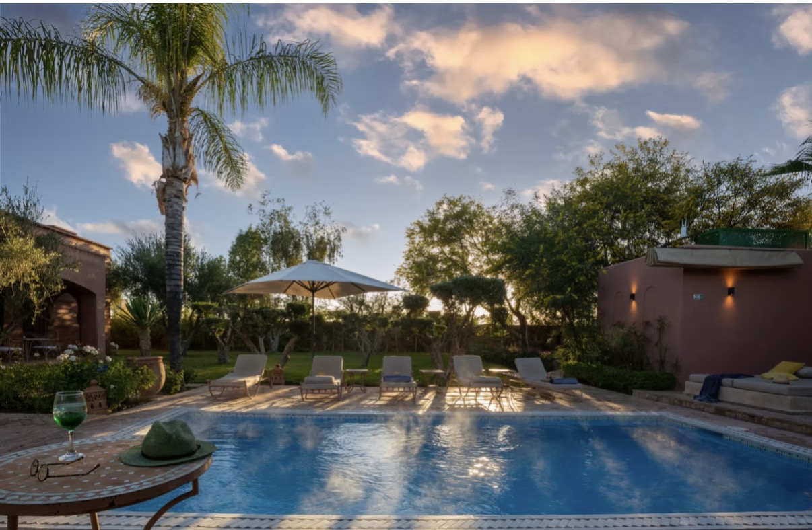
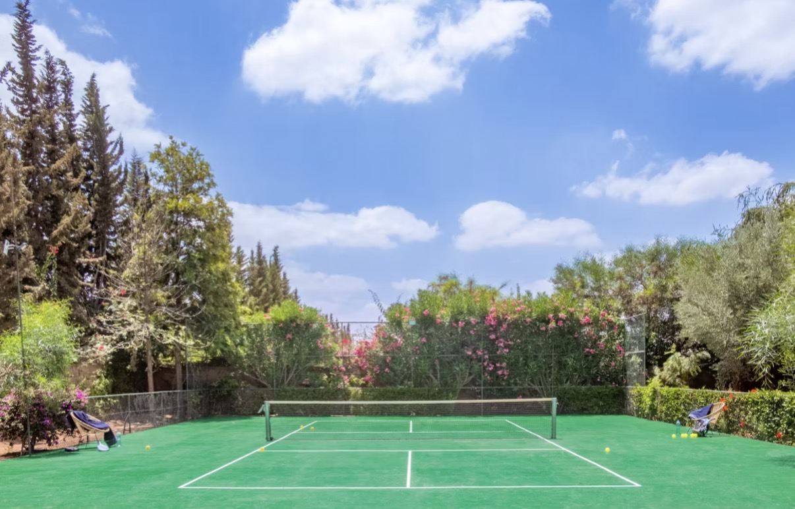
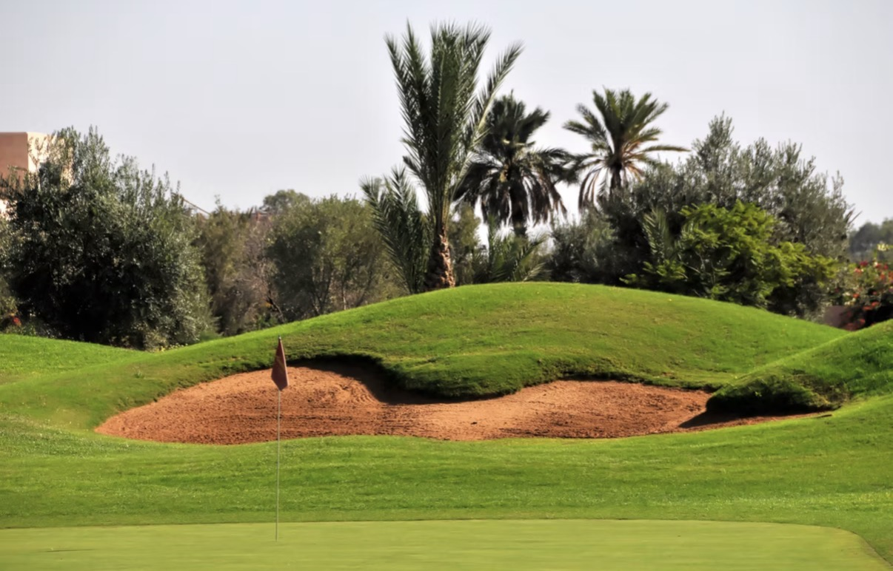
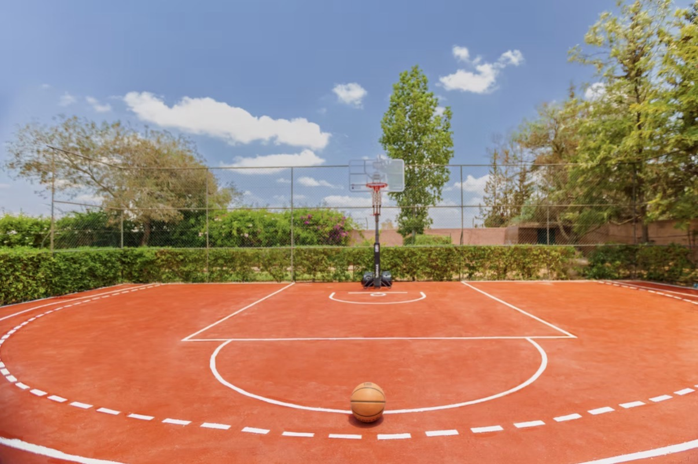
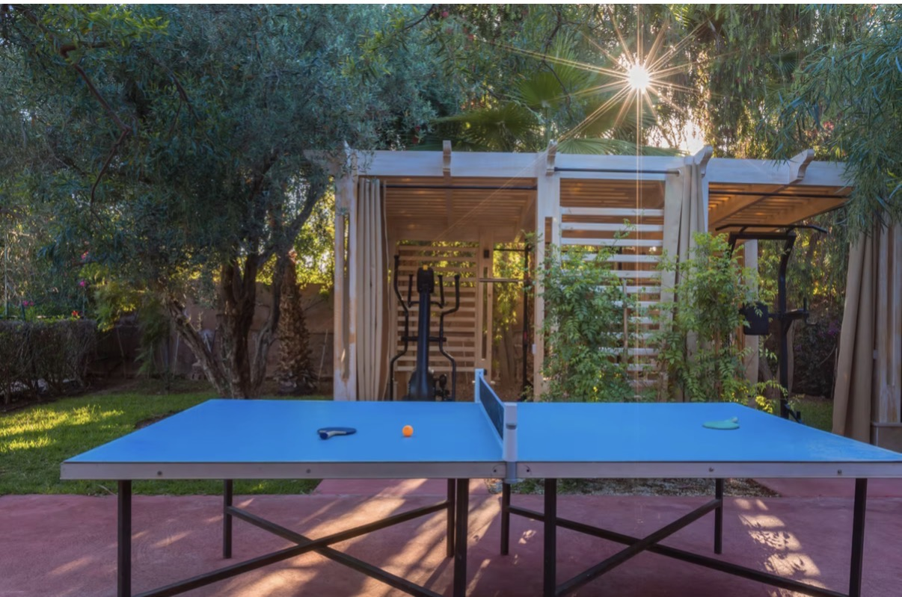
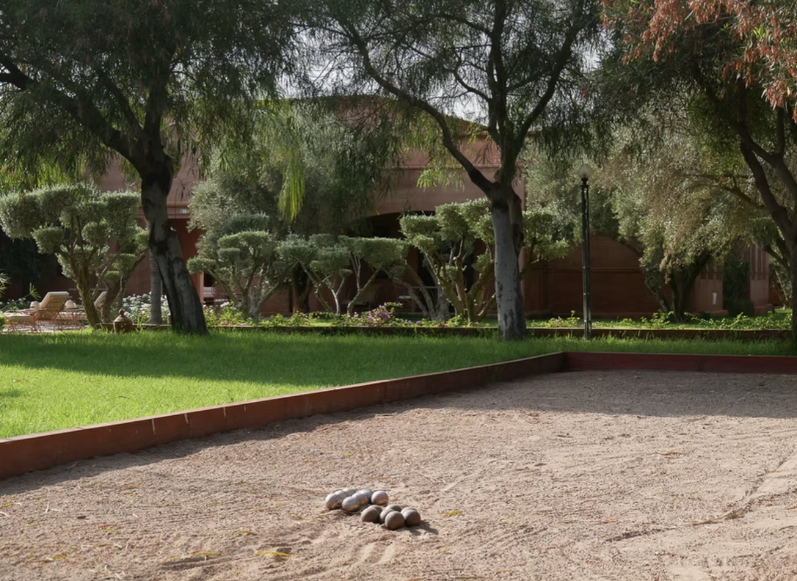
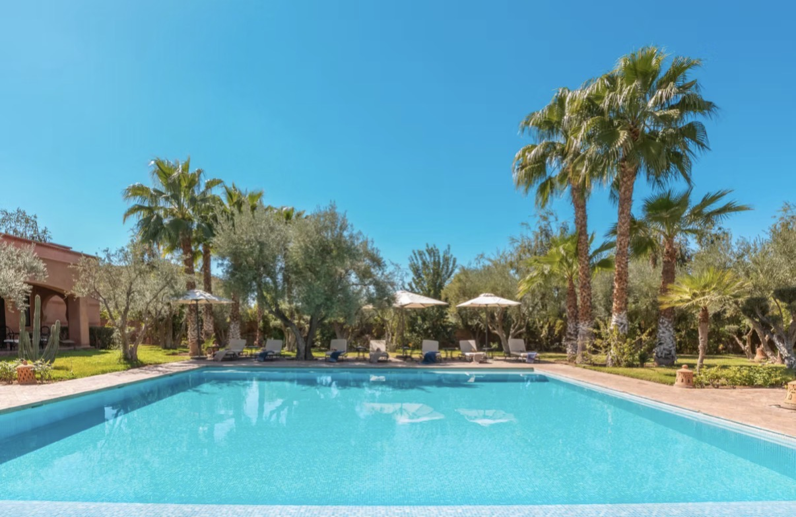
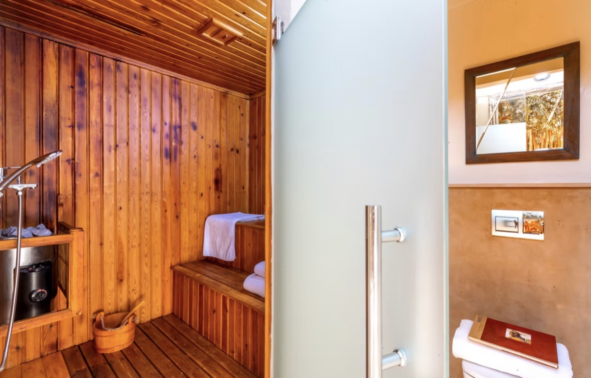
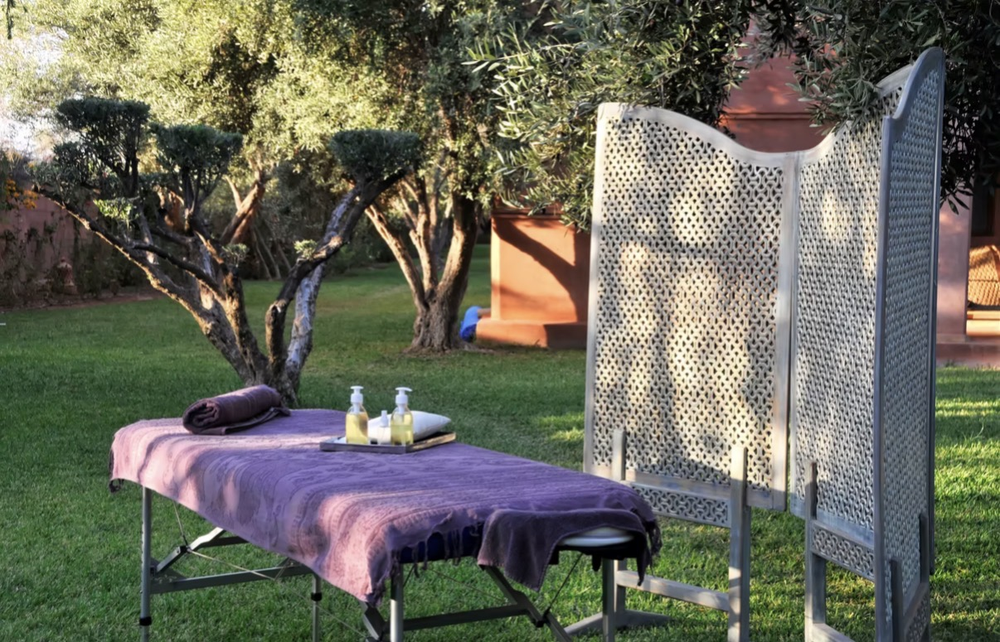
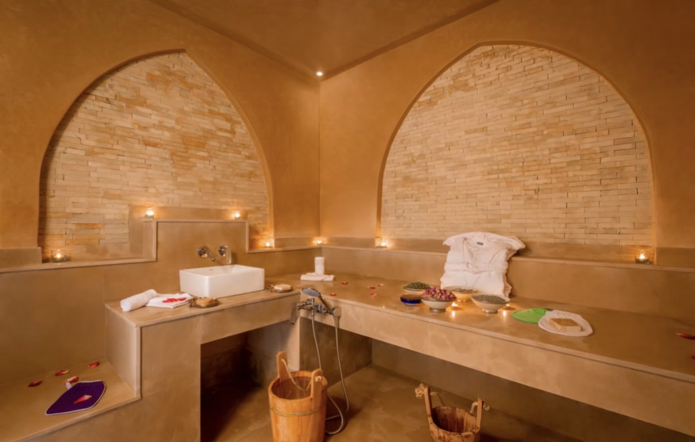

Jour 01 · 25 mai
La soirée traditionnelle
MomentsAnhala · Henné · Tadwat
AmbianceTouareg · musique · partage
DînerCuisine traditionnelle & convivialité
Nous avons choisi Marrakech pour réunir ceux que nous aimons autour de deux journées faites de chaleur, de traditions, de fête et de souvenirs.
Ce site évoluera avec nos préparatifs. Les horaires, menus et informations pratiques seront mis à jour au fur et à mesure de leur confirmation.
Dar Layyina accueillera nos deux célébrations à Marrakech. C’est ici que nous partagerons les grands moments du 25 et du 26 mai.
Bien-être : le hammam, le sauna et les massages sont optionnels et restent à la charge des invités qui souhaitent en profiter, selon les tarifs et disponibilités de Dar Layyina.
À noter : Dar Layyina est notre lieu de célébration, pas l’hébergement des invités. Une sélection d’hôtels, villas et appartements sera proposée séparément.
Entre les célébrations, la villa offre aussi de vrais moments de vacances : sport, piscine et bien-être, dans les jardins de Dar Layyina.

Piscine
Tennis
Golf
Basketball
Ping-pong
Pétanque
Deuxième piscine
Sauna
Massage au jardin
HammamNotre mariage mélange l’élégance de Marrakech, la chaleur de l’été et des touches inspirées de nos traditions. Utilisez cette palette comme inspiration, pas comme uniforme.
Les tons sable, crème et blanc cassé peuvent accompagner ces couleurs. L’objectif est une ambiance lumineuse, chaleureuse et festive.
Des inspirations seront ajoutées ici pour vous aider à préparer vos tenues. L’idée : être élégant, à l’aise et fidèle à vous-même.
Pour la soirée traditionnelle, une tenue touarègue ou d’inspiration traditionnelle est la bienvenue, sans être obligatoire. Privilégiez des matières agréables et adaptées à la chaleur.
Pour la grande célébration : tenue élégante et festive. Pensez aussi au confort pour profiter du dîner et danser.
Nous voulons aussi que ces quelques jours soient une parenthèse de vacances. Ici, vous retrouverez nos adresses, idées et conseils pour profiter de Marrakech à votre rythme.
Palais, jardins, médina et lieux emblématiques.
Textiles, objets, couleurs et savoir-faire.
Hammams, spas et moments de détente.
Désert, coucher de soleil et excursions.
Restaurants et lieux que nous sélectionnerons.
Les journées peuvent être chaudes et très ensoleillées. Quelques essentiels rendront votre séjour beaucoup plus confortable.
Crème solaire, lunettes de soleil, chapeau ou casquette et gourde. Les maximales de mai montent généralement d’environ 26 à 31 °C au fil du mois.
Matières légères et respirantes pour la journée, maillot de bain et une couche légère pour les soirées plus fraîches.
Une paire confortable pour marcher dans la médina et une paire adaptée aux célébrations.
Médicaments personnels, ordonnances si nécessaire, chargeurs, batterie externe et copies utiles de vos documents de voyage.
Pensez au maillot de bain. Les piscines et espaces sportifs font partie du lieu ; les prestations de bien-être payantes sont séparées.
Nos recommandations sont là pour vous aider, mais chacun reste libre d’organiser ses journées et de découvrir Marrakech à son rythme.
Votre hébergement, vos visites et excursions personnelles, vos tenues traditionnelles si vous en souhaitez, ainsi que le hammam, le sauna et les massages à Dar Layyina. Les éventuels tarifs seront indiqués ou confirmés lorsqu’ils seront disponibles.
Les informations pratiques seront affinées à mesure que les réservations et la logistique seront confirmées.
Hôtels, villas et appartements proches de Dar Layyina, pour différents budgets. L’hébergement des invités n’est pas compris.
Les informations concernant navettes, transferts et retours seront publiées ici dès confirmation.
Les menus seront ajoutés lorsqu’ils seront finalisés. Votre RSVP nous aide à prévoir allergies, régimes et boissons.
Si des enfants figurent sur votre invitation et viennent avec vous, indiquez leur prénom et leur âge dans le RSVP afin que nous puissions prévoir leur accueil et leur repas.
Les invitations sont nominatives. Merci de ne pas ajouter d’accompagnant ou d’invité supplémentaire sans nous en parler au préalable.
Horaires, transports, menus et dernières informations seront mis à jour ici au fur et à mesure des confirmations.
Nous compléterons cette rubrique au fil des préparatifs.
Merci de nous en parler avant toute chose. Le nombre de places est limité et les invitations sont nominatives.
Non. Elle est proposée pour celles et ceux qui souhaitent participer pleinement à l’ambiance du 25 mai. Son achat ou sa confection reste à votre charge.
Non. Dar Layyina est le lieu des célébrations. Chacun réserve son hébergement ; nous partagerons des suggestions à proximité.
Non. Ces prestations sont facultatives et payées directement par les invités qui souhaitent en profiter, selon disponibilité et tarifs.
Pour prévoir correctement les repas, les boissons, les menus enfants, les allergies et les besoins de chacun avec notre traiteur.
Pas encore. Les grandes lignes sont posées, mais les horaires et certains détails seront actualisés après validation avec nos prestataires.
Merci de nous transmettre votre réponse et les informations utiles à l’organisation. Si votre situation change, nous pourrons ajuster votre réponse plus tard.